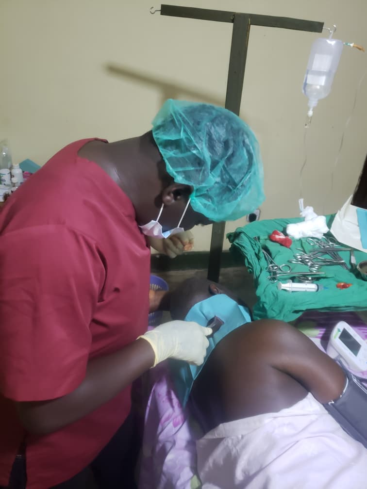

Pre-op essentials
Contributes to laboratory workup, medicines, and the small costs that can delay an operation.
Give $25Volunteer surgeons donate their professional fees. That means $175 covers everything else for a typical elective general surgery operation: theatre time, anaesthesia, mesh and sutures, laboratory tests, medicines, and follow-up care.
The $175 unit-cost model applies to the general surgery program. Reconstructive surgery costs vary by case; contact us to discuss assessment and support.
It is 630,000 UGX — a fraction of the $300 to $600 a family can face when a treatable condition becomes an emergency. More importantly, it is the difference between a patient returning to work and a household losing its income.
336 surgeries are planned every six months. Every gift is acknowledged and recorded.
Behind every surgical list are patients seeking care and a team working to provide it.



Donations of any size are welcome. If you would like to give in UGX, use the bank details below.
Contributes to laboratory workup, medicines, and the small costs that can delay an operation.
Give $25Covers roughly half the all-inclusive cost of one typical elective procedure.
Give $88Funds one patient from assessment through surgery and the 30-day follow-up review.
Fund one patientA monthly pledge by bank transfer helps the team plan consistent surgical lists. Contact the team to arrange it.
Arrange a monthly pledgeThe example below is an inguinal hernia repair with mesh. The same discipline applies to every procedure on our list.
| Cost element | What it covers | USD | Approx. UGX |
|---|---|---|---|
| Surgeon & consultation | Professional fees donated by volunteer general surgeons | USDDonated | UGX— |
| Theatre facility & sterilisation | Subsidised operating room space and autoclave care | USD$45 | UGX162,000 |
| Anaesthesia & medications | Spinal or local anaesthesia kits, IV fluids, and monitoring | USD$35 | UGX126,000 |
| Surgical consumables | Synthetic mesh, sutures, drapes, gloves, and gowns | USD$40 | UGX144,000 |
| Pre-op laboratory & diagnostics | CBC, blood grouping, urinalysis, and basic imaging | USD$20 | UGX72,000 |
| Post-op medicines & dressing | Analgesics, antibiotics, and a discharge medication pack | USD$15 | UGX54,000 |
| Patient logistics & welfare | Post-op nutrition, follow-up check-ins, and transport support | USD$20 | UGX72,000 |
| Total per patient | Complete surgical restoration and follow-up care | USD$175 | UGX630,000 |
Surgeon and consultation fees are donated, saving about $250 per case. Amounts are based on the H4L unit-cost model.
We recommend bank transfer directly to Lanz Clinic. WorldRemit and Western Union are alternatives that send to a named individual. Please contact the team if you need help or a receipt.
Please include “H4L donation” as the transfer reference. For a receipt or help with a larger gift, contact Mrs Nankunda Mercy, Finance Director and Accounting Officer.
These methods send funds to Buluke Brian personally, not directly to Lanz Clinic’s bank account. Confirm the recipient name and any transfer fees before sending.
Use WorldRemit to send using either of these mobile-money numbers:
This website does not process payments. Read our donation terms for receipting and refund information.
We track every enrolled patient against the same standards we expect from any operating theatre.
Enrolled patients pay nothing out of pocket.
WHO Surgical Safety Checklist applied to every operating list.
30-day surgical site infection rate kept below 2%.
Every patient is reviewed after discharge.
The project also needs skilled people, institutional partnerships, and referrals from the communities we serve.
Qualified general surgeons, anaesthetists, nurses, and theatre staff can support scheduled operating lists at Lanz Clinic.
Offer your skillsCompanies, foundations, diaspora groups, and civic organisations can sponsor a day of surgery or a six-month programme.
Discuss a partnershipVillage health teams and regional clinics can refer patients who are uninsured and unable to meet the upfront costs of care.
Make a referralSpeak directly with the team before you give. We are happy to explain the budget, the safeguarding process, or how a specific gift will be used.
Contact Half 4 Life